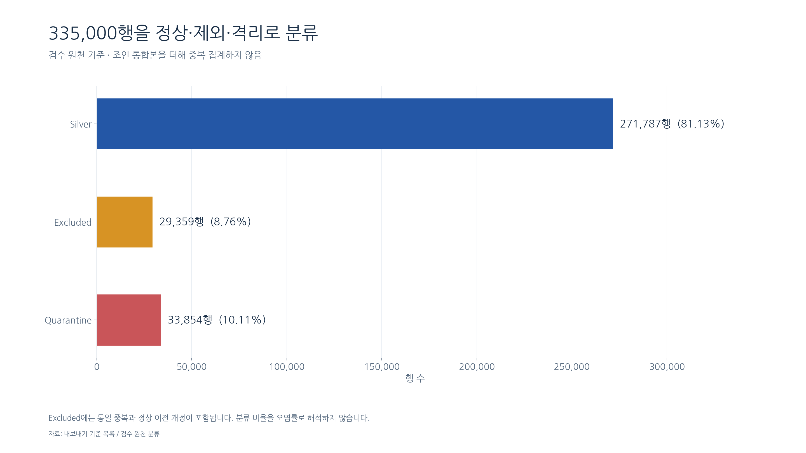
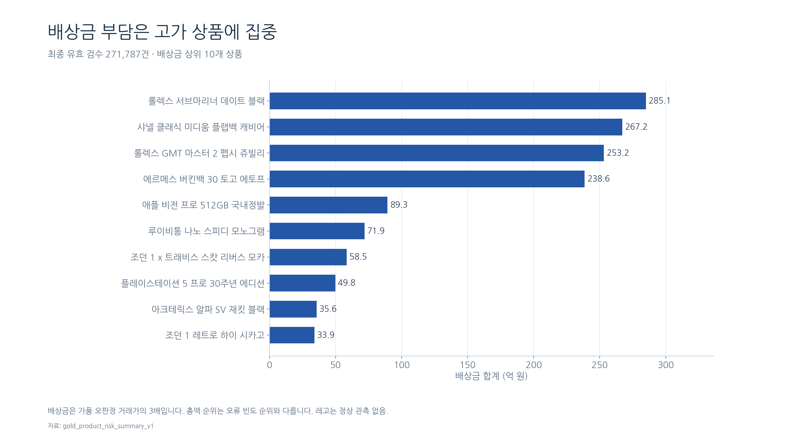
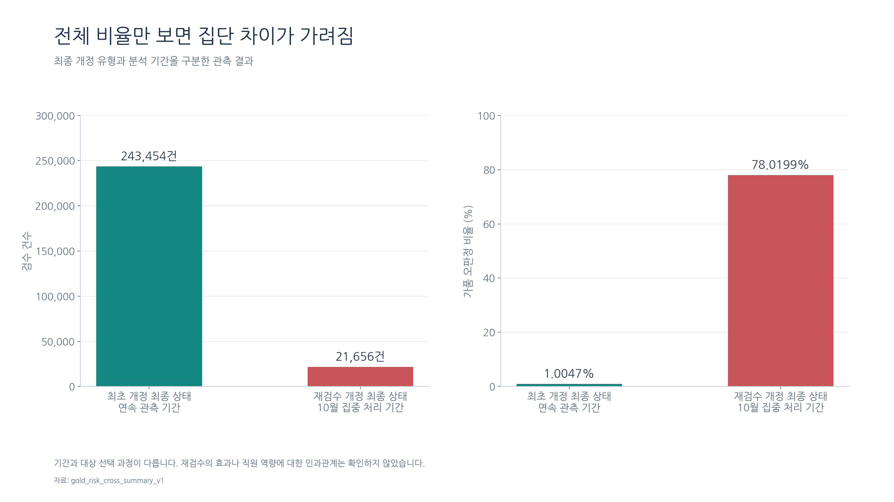
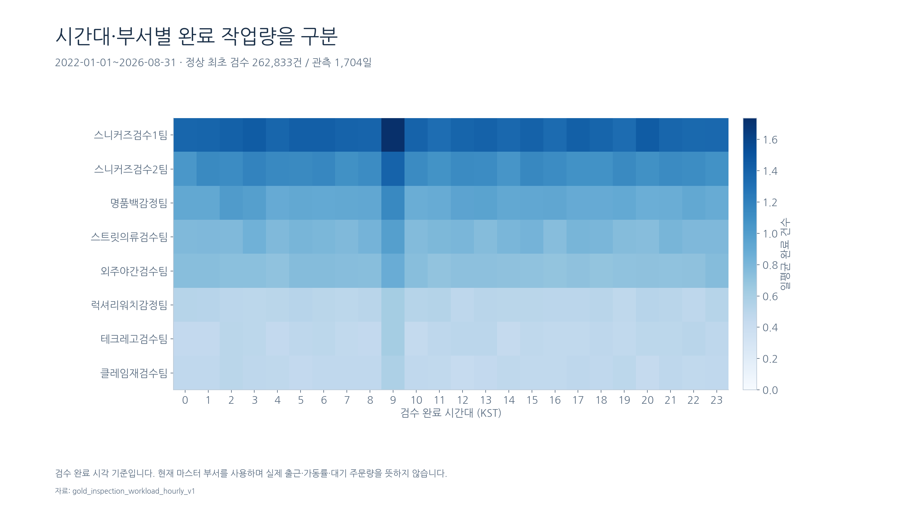
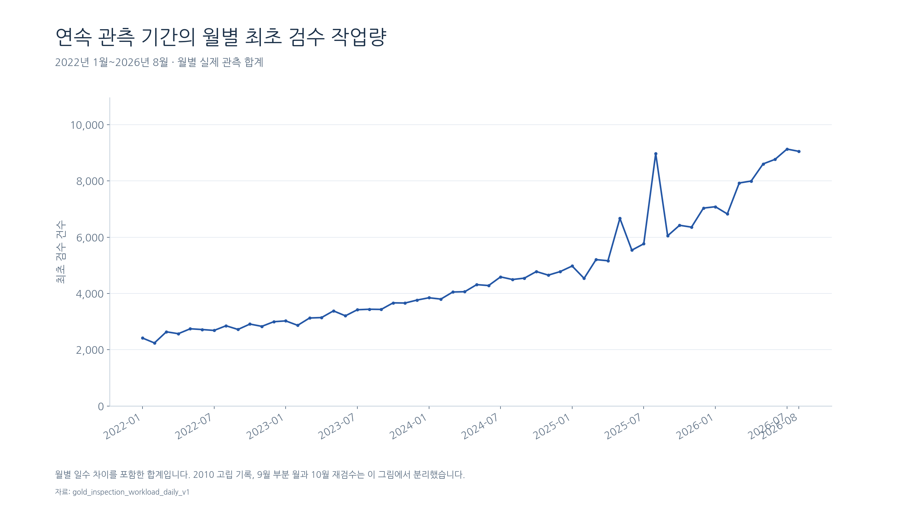
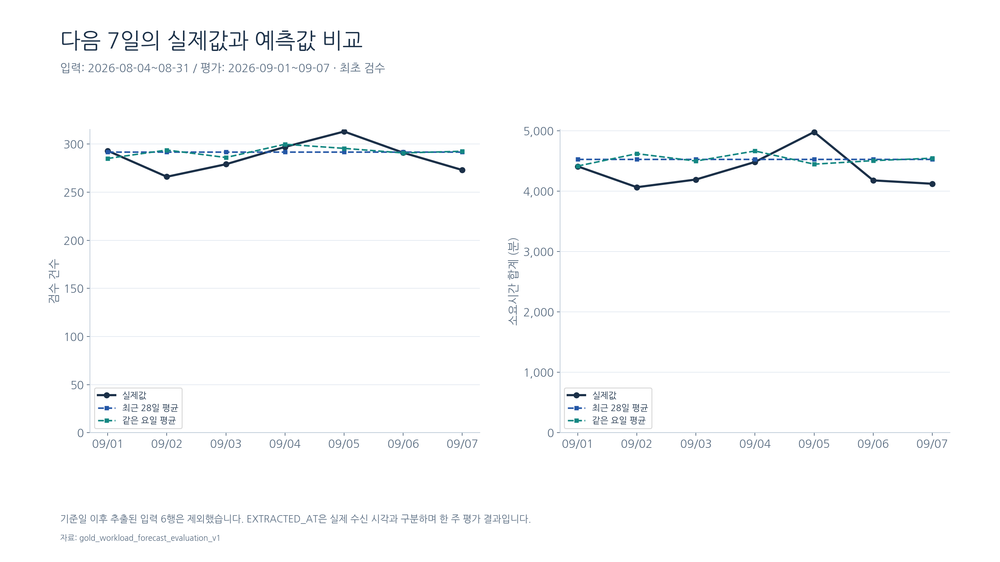
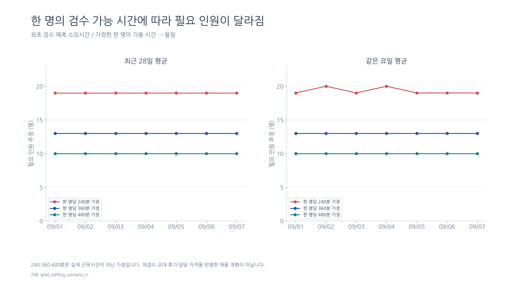
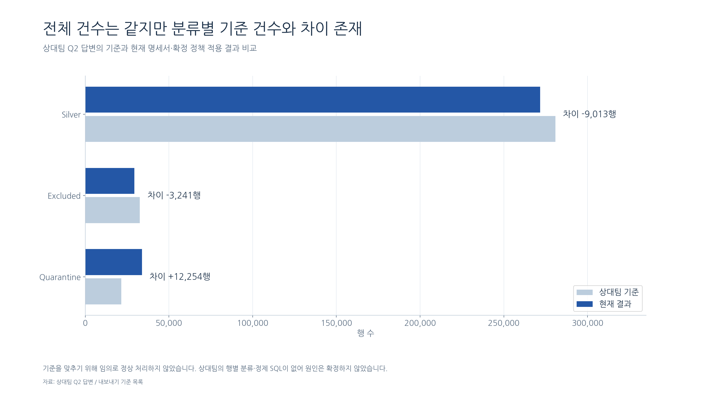

KREAM 발표용 시각화
검증된 최종 CSV를 사용한 발표용 그래프 9개. 실제 DB와 SQL은 변경하지 않습니다.
재현 상태: 최종 파일 검증 완료 / 별도 DB의 전체 재현 검증 진행 중.
정상·제외·격리 분류
전체 원본 335,000행을 빠짐없이 분류했다.

범위: 최종 검수 상태. 제외가 모두 오염을 뜻하지 않음.
자료: export_manifest
SVG · 수치표 CSV상품별 배상금 상위 10개
상품 가격을 함께 고려해 배상금 위험을 해석한다.

범위: 현재 최종 상태 전체. 정상 관측 없는 상품을 위험 0으로 해석하지 않음.
자료: gold_product_risk_summary_v1
SVG · 수치표 CSV최초 개정·재검수 집단 비교
약 1.00%와 78.02%를 같은 집단의 성과처럼 비교하지 않는다.

범위: 연속 기간 최초 개정 최종 상태와 10월 재검수 최종 상태의 관측 비교.
자료: gold_risk_cross_summary_v1
SVG · 수치표 CSV시간대·부서별 작업량
완료 작업량 분포를 기준으로 운영 검토 지점을 찾는다.

범위: 연속 기간 최초 검수만 포함. 시간별 합계를 전체 관측 1,704일로 나눔.
자료: gold_inspection_workload_hourly_v1
SVG · 수치표 CSV월별 최초 검수 작업량
관측 기간을 분리해 작업량 흐름을 해석한다.

범위: 2022-01~2026-08의 56개월 전체. 부분 기간과 재검수 제외.
자료: gold_inspection_workload_daily_v1
SVG · 수치표 CSV실제값과 예측값
예측을 실제값과 분리해 저장하고 같은 날짜로 비교했다.

범위: 정상 최초 검수의 완료 작업량. 미래 주문 유입 예측과 구분.
자료: gold_workload_forecast_evaluation_v1
SVG · 수치표 CSV두 예측 방법의 오차
단순한 방법도 검증하고 지표별 차이를 확인한다.

범위: 2026-09-01~09-07 한 주 평가. WAPE를 정확도로 표현하지 않음.
자료: gold_workload_forecast_summary_v1
SVG · 수치표 CSV인력 배치 시나리오
실제 가용 시간이 없으므로 가정을 명시해 운영 검토에 연결한다.

범위: 정상 최초 검수만 포함. 현재 재직 인원과 실제 출근 인원을 대조하지 않음.
자료: gold_staffing_scenario_v1
SVG · 수치표 CSV상대팀 기준과의 차이
총수 보존과 분류 기준 차이를 구분해 개선 항목으로 남긴다.

범위: 이 대화에 사용자가 공유한 상대팀 답변 Q2. 명세서에서 산출한 값이 아님.
자료: 상대팀 Q2 답변 / export_manifest
SVG · 수치표 CSV